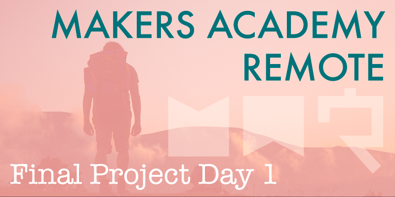

The last nine weeks have passed in a blur, and I arrive at week 10 exhausted, almost burned out and finding myself wanting for a single solitary day away from my laptop, but also excited at the prospect of the two week long final project.
One of the greatest frustrations of this course has been the fact that with so much material to cover, we've each accumulated a large number of uncompleted projects. There's been little consideration for producing a finished, polished product, only in ensuring that we're learning something new each day. We're building skills, not products, as our coach Sam frequently reminds us. I believe he's absolutely right, but it would be nice to see something through to completion. Thankfully the next two weeks will provide the longest stretch of time we've been given to work on any one project, and with these final projects becoming the result that we'll present upon our graduation, the focus for once will be on producing a polished MVP, which of course adheres to all of the best practices we've been taught throughout the course.
Ideas
Various rounds of voting took place in order for Sam to select the final project ideas and allocate their groups, and I was pleased to discover that I'd be working on my own idea, ‘Roadtripper', a concept that was originally thought up in a conversation between my wife and I. The idea, which was based around our experiences when road tripping along the west coast of America is to build an online road trip planning and sharing tool. Users could post information about their road trips, sharing useful advice with others such as affordable places to stay, or good places to eat. I posed this idea to the cohort last week and I'm pleased to say that enough people voted for it that it was chosen as one of the five final projects, from the original list of more than sixty ideas.
Let's get started
At the start our group assembled for several hours of brainstorming, following the conventions proposed in The Product Design Sprint by thoughtbot. After discussion we opted to build the project primarily in Ruby on Rails, and will potentially introduce an AngularJS front end once the basic features have been implemented. One of the most enticing features of the final project is the fact that for once there are no limits imposed on the technology we use, we're free to use a completely new language if we wish to, or even develop a mobile app rather than a web app. However after consideration it does appear that a relatively familiar Rails app will best suit our project. I enjoy working with Rails so I'm happy with the decision.
Other discussion topics today have included potential ways to monetise our product (we're addressing the project as if building a long-term, commercially viable product), and the user experience. It was fascinating to see the various different directions in which the project could evolve, and infectious to see how the other members of the group grew more excited as their own input altered the shape of my initial idea, such that their ownership stake in the concept increased.
Our final project is at a very early stage, but it's hugely exciting already, and I'm thrilled with the group I'll be working with. I plan to blog every day throughout this final project, providing of course that I can find the time to do so!